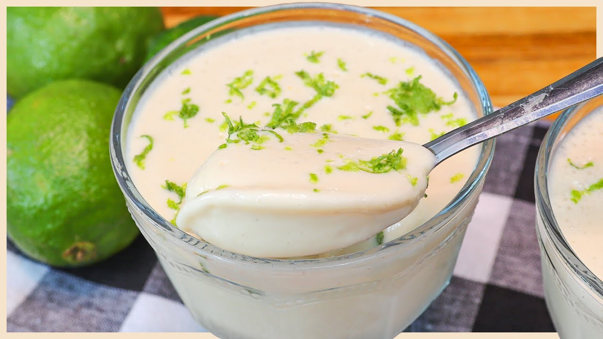

Mousse de Limão

Descrição
Na receita de hoje iremos fazer um simples e delicioso Mousse de Limão.
Ingredientes
- 1 lata de leite condensado
- 1/2 xícara de suco de limão (esse suco é puro mesmo, sem água, é só espremer o limão)
- 1 lata de creme de leite
Etapas
- Coloque no liquidificador o creme de leite (com soro mesmo) e o leite condensado.
- Bata um pouco e depois vá acrescentando o suco de limão, aos poucos.
- Ele vai ficar bem consistente, leve à geladeira por 1 hora.